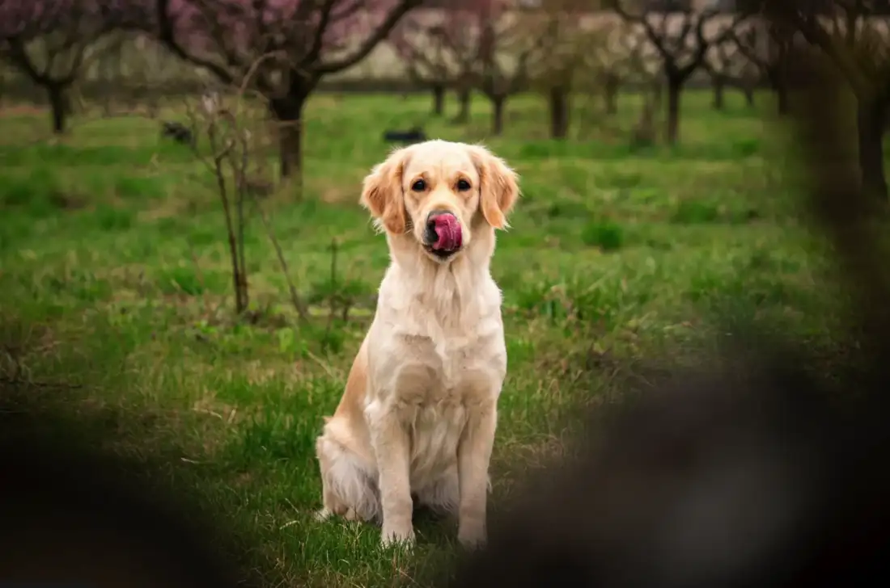
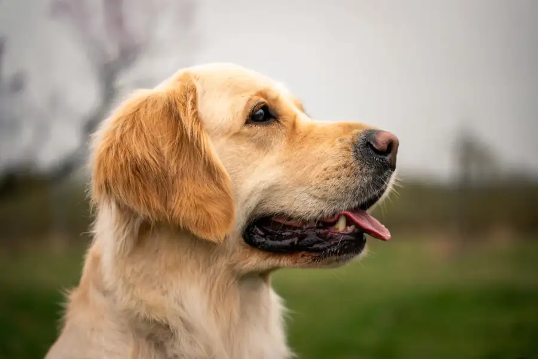
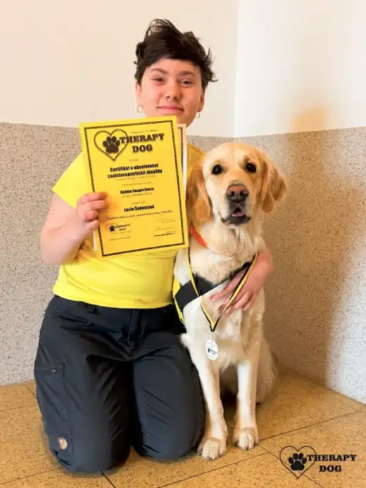

Featured
Amelie Aureum
Jemná, kontaktní fena s klidnou hlavou a velkou chutí spolupracovat.

Zlatý začátek života
Chovatelská stanice retrívrů vzniklá z lásky k jejich laskavé povaze, inteligenci a oddanosti rodině.
O nás
Aureum Vellum stojí na klidném domácím zázemí, každodenním kontaktu s lidmi a respektu k povaze retrívra. Nechceme chovat jen krásné psy na papíře, ale vyrovnané parťáky pro skutečný život.
Každý vrh plánujeme s rozvahou. Zajímá nás zdraví rodičů, jejich temperament, typický exteriér i to, aby se štěňata dostala do zodpovědných rodin.
Poznat naše psy
Naši psi
Při výběru chovných psů klademe důraz na zdraví, vyrovnanou povahu a typický výraz retrívra.
Featured
Jemná, kontaktní fena s klidnou hlavou a velkou chutí spolupracovat.

Profil psa
Vyrovnaný pes s laskavou povahou, pevným zdravím a krásným exteriérem.

Štěňata
Každý vrh plánujeme s důrazem na zdraví, povahu a vhodnost spojení. Štěňata odchováváme doma, s maximální péčí a postupnou socializací.
Jak probíhá odchov
Štěňata si zvykají na běžný chod domácnosti, zvuky, manipulaci i přítomnost lidí.
Postupně poznávají nové podněty, povrchy, návštěvy a jemné návyky pro budoucí rodinu.
Hledáme zodpovědné majitele, kteří chtějí psa jako člena rodiny a parťáka do života.
Zdraví a dokumentace
Naši psi splňují chovné podmínky a absolvují zdravotní i genetická vyšetření. Detailní výsledky patří do profilů jednotlivých psů, tady návštěvník rychle pochopí, čemu věnujeme pozornost.
Novinky & život s námi

První teplé dny, dlouhé procházky a několik fotek ze života naší smečky.

Co všechno řešíme před plánovaným spojením a proč na nic nespěcháme.

Radostné zprávy z nových domovů a malé ohlédnutí za posledním společným setkáním.
Kontakt
Budeme rádi, když nám napíšete něco o sobě, svých zkušenostech a představě o společném životě se psem.